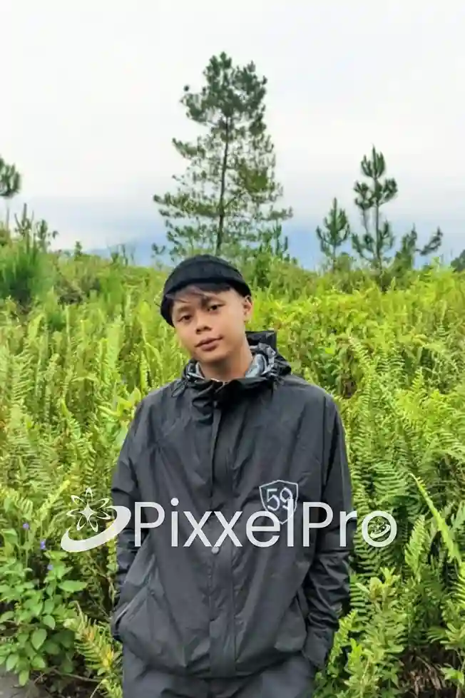

Portofolio & Keahlian
Informasi lengkap mengenai latar belakang, spesialisasi teknis, serta rekam jejak publikasi artikel dari anggota tim kami.

Caisar Rizqi Alamsyah
Siswa SMKN 1 TUREN
"Berproseslah dengan diam, kejutan lebih menarik daripada omong kosong".
Tentang Caisar
Saya Caisar Rizqi Alamsyah, siswa kelas 12 jurusan Bisnis Digital. Saya adalah peserta magang di PixxelPro Digital yang aktif terlibat dalam penulisan SEO dan pembuatan konten digital, khususnya untuk topik bisnis, UMKM, dan digital marketing. Selama magang, saya terbiasa menulis artikel website yang disesuaikan dengan kebutuhan audiens dan tujuan bisnis klien.
Dalam peran ini, saya sering menyusun content brief, melakukan riset keyword, serta menentukan struktur artikel agar ramah mesin pencari dan mudah dipahami. Saya juga terlibat dalam pengembangan ide konten media sosial untuk mendukung branding dan promosi secara digital.
Melalui pengalaman magang di PixxelPro Digital, saya terus mengasah kemampuan menulis, berpikir strategis, dan mengikuti tren digital terkini. Saya berkomitmen untuk membantu bisnis dan UMKM membangun kehadiran online yang profesional dan berkelanjutan.
Jejak Tulisan & Publikasi
Berikut adalah beberapa platform di mana saya aktif berkontribusi menghasilkan konten berkualitas.
Vendor Outbound
Menulis artikel informatif mengenai aktivitas Outbound Paintball. Lebih spesifik membahas rincian paket, pengalaman seru permainan, pengertian serta peraturan teknis Paintball, hingga ulasan wisata alam di Batu - Malang.
Artikdia
Menulis beragam topik kewirausahaan; mulai dari panduan dasar bisnis agrikultur (pertanian & peternakan), hingga artikel promosi jasa Paket Aqiqah Nganjuk yang mengupas tuntas dasar hukum dan syari'atnya.

Siap Mewujudkan Ide Digital Anda?
Jangan biarkan rencana hebat Anda hanya menjadi wacana. Apakah Anda membutuhkan website profesional, riset data mendalam, atau strategi konten yang memikat? Mari diskusikan kebutuhan Anda bersama tim kami sekarang juga.
Hubungi Kami via WhatsApp